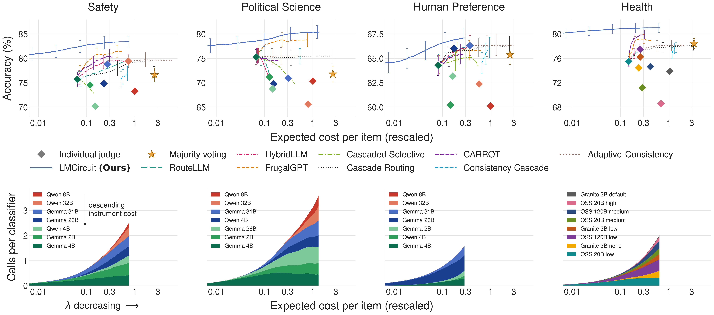
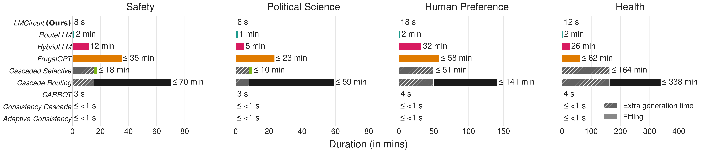

An LLM classifier is a noisy measurement instrument
Prompt a language model with a sample and it returns a label. Ask again and it may return a different one. Each query is a noisy measurement of the true label, and each measurement has a price.
Here a classifier is one configuration: a backend model, an instruction prompt, a rubric, decoding settings. We call each configuration an instrument. A pool of instruments differs in accuracy, in cost per call, and in which prompts each one gets right.
The question. Given a pool of instruments, which should we query next, if any, and when should we stop and predict?
Same prompt, same model, fresh randomness on every call. Within a prompt the calls are independent; across prompts the models share what makes a prompt hard.
Which circuit is optimal?
Among all ways of wiring a pool of classifiers together, which one gives the best accuracy at a given average cost?
Can we learn it from data?
The optimal circuit needs probabilities we do not know. Can a small model estimate them for unseen prompts?
Routing, cascades and voting are all circuits
A classification circuit is any procedure that queries one or more instruments and combines their outputs into a final decision. The instruments are the components; decision rules say which to query next, when to stop, and how to combine.
Majority voting, routing and cascades are three wirings of the same components, each with its own cost and accuracy. LMCircuit searches the whole class, letting every choice depend on the prompt and on the answers so far.
Same three instruments, four wirings. Colour is cost per call: LLM1 cheap, LLM2 mid, LLM3 expensive.
At every step the circuit asks: query or stop?
Any circuit that queries several instruments at once has a sequential twin with the same error and the same cost. So the optimal circuit can always ask one instrument at a time, and the whole design reduces to a sequence of query-or-stop decisions.
The circuit keeps a belief about the label. Stopping costs the Bayes error of that belief, min(q, 1−q). Querying instrument i costs λci now, but reduces the Bayes error.
The Bellman equation compares the two. Solving it backward over all states gives the optimal circuit for this prompt and this price.
Numbers are illustrative. Each possible answer moves the belief, and the Bayes error after the answer is averaged over how likely each answer is. The circuit asks when that expected error, plus the price, beats stopping now.
The optimal circuit is a dynamic program
A state is the set of instruments asked so far and what they said. With n instruments there are 3n states, since each instrument is unqueried, said yes, or said no. Backward induction over them yields, for one prompt and one cost–accuracy weight λ, which instrument to ask first, which to ask after each answer, and when to stop.
Drag the cost–accuracy weight. At a large λ, cost weighs more than error and the circuit predicts from its prior belief alone. As λ shrinks, the cheap instrument enters first, and the expensive one is reserved for the branches where the answers so far leave the belief near one half.
For a fixed λ, the whole tree is the circuit: it prescribes an action for every possible sequence of observations. The amber path is the realization on this prompt, following the answers that were actually observed. One fitted model serves every λ, so a single model traces the whole cost–accuracy frontier.
Illustrative instruments LLM1, LLM2, LLM3 with accuracies 72%, 78%, 86% and relative costs 0.06, 0.10, 0.45. Belief is the probability that the response is safe; the prompt's prior is 46%, and all three recorded answers say "safe". The five slider stops are the weights at which the optimal circuit changes shape.
One probabilistic model glues the instruments together
The dynamic program needs two things for every prompt: the belief P(Y | z, history) at every state, and the chance that each instrument answers 1. Neither is known. We learn both from one labeled training set.
A text embedding φ(z) enters a small network fθ with two heads. The label head η reads the embedding together with the answers collected so far and returns the belief. The instrument heads νi predict what each instrument will say. Both are trained with cross-entropy against recorded labels and recorded calls.
The heads feed the dynamic program: η sets the stopping error at each state, ν sets the transition probabilities. The network runs on a CPU, and at the empty state it already gives a zero-cost prediction.
LMCircuit is instruments, a belief model, and a dynamic program
The three pieces from the previous screens, and how they connect.
-
Instruments
LLM classifiers as noisy measurements with a cost per call. Independent within a prompt, correlated across prompts.
Noisy instruments -
A belief model
One network on prompt embeddings: a label head for the belief at any state, instrument heads for what each will say.
Gluing it together -
A dynamic program
Query or stop at each state, solved backward for any price. The result is a prompt-specific circuit.
The optimal circuit
The dynamic program grows as 3n in the pool size, and a small well-chosen pool is usually enough.
A better cost–accuracy frontier on four tasks
Safety (BeaverTails), political science (PolitiCAUSE), human preference (LMArena) and health (HealthBench), with pools of seven or eight open models. Across all four, LMCircuit Pareto-dominates routing and cascading baselines: RouteLLM, HybridLLM, CARROT, Cascade Routing, Consistency Cascades, Cascaded Selective, FrugalGPT and Adaptive-Consistency.

img/frontier.png.
img/runtime.png.Ask the instrument with the most information per dollar, and stop when the belief is certain.
A query is valuable for its label and for what it reveals about how hard the prompt is. The optimal circuit spends more on prompts where instruments disagree and resolves easy ones at once.